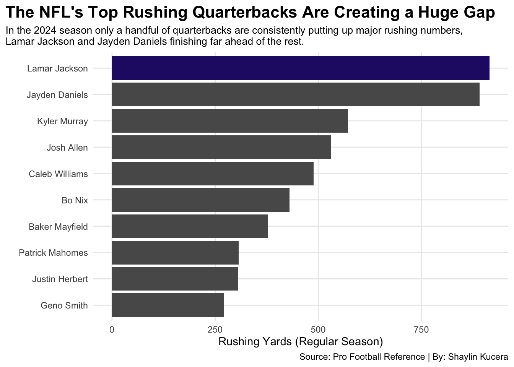
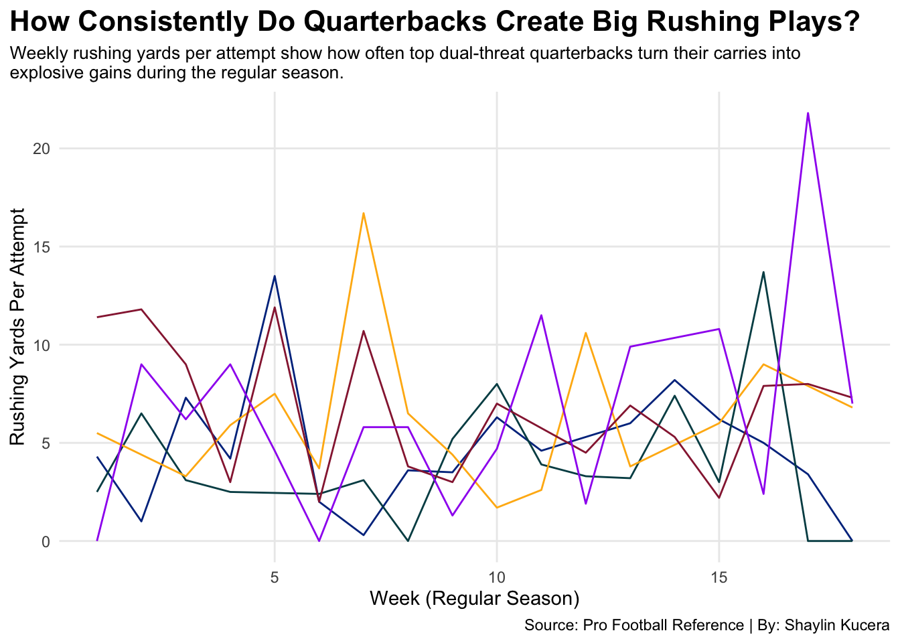
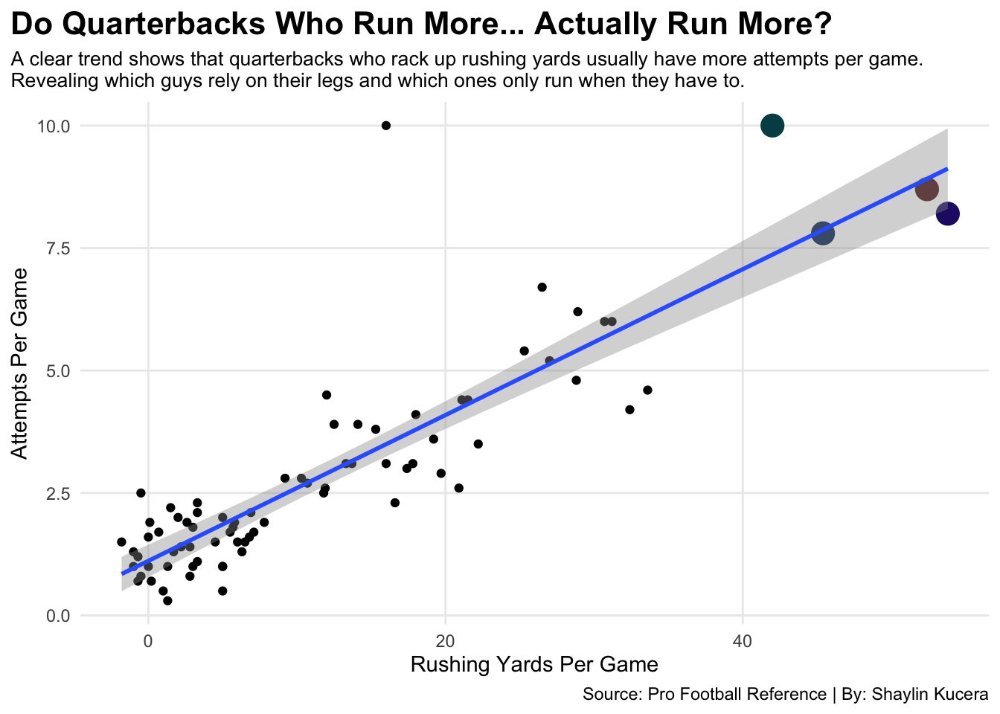
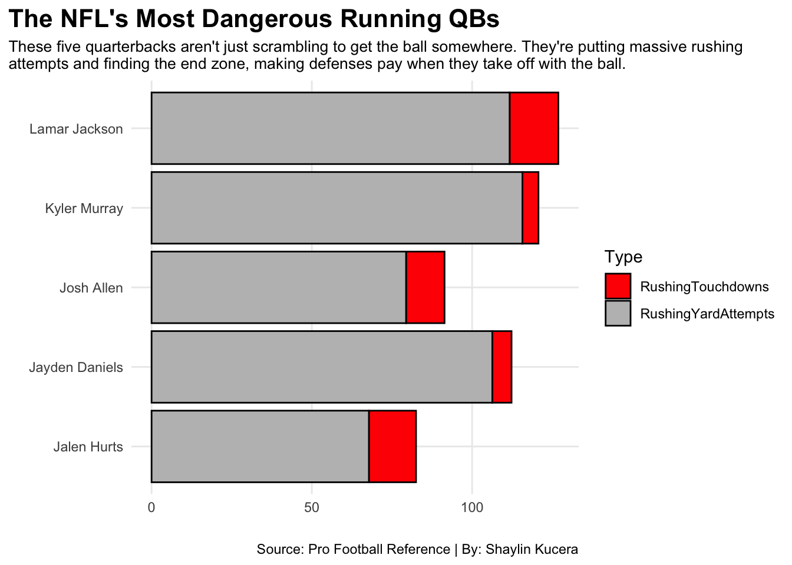

The quarterback role in the NFL has shifted a ton over the past decade. It’s not just about classic pocket passers anymore. Teams are leaning into quarterbacks who can actually move, guys who extend plays, escape pressure, and pick up yards when everything breaks down. Players like Lamar Jackson, Jalen Hurts, and Josh Allen have basically changed what people expect from the position. Defenses can’t just worry about the throw anymore; they have to account for the run game coming straight from the quarterback.
The shift brings up a pretty big question: Does running actually make a quarterback better, or is it just something that looks cool on Sundays? When you look at today’s top quarterbacks, the difference in how much they rely on their legs is obvious. Some use rushing as a huge part of their game, while others only run when they absolutely have to. Then you’ve got the more traditional passers who barely take off at all. Seeing those differences makes it clear that mobility can change how an offense works. Whether it’s turning broken plays into first downs or just creating more things for a defense to worry about, the ability to run definitely adds something extra to the position.
Code
library(tidyverse)library(waffle)library(ggbeeswarm)library(ggrepel)qb <-read_csv("2024passing.csv")qbrush <-read_csv("2024rushing.csv")qb24rush <- qbrush |>filter( Pos =="QB" )top22attempts <- qb |>filter( Att >=361 ) top10 <- top22attempts |>filter( Rk <=10 )barrush <- qb24rush |>filter( G >=16, Yds >=270 )Lamar <- barrush |>filter( Player =="Lamar Jackson" ) JoshAllen <-read_csv("JoshAllen.csv")LamarJackson <-read_csv("LamarJackson.csv")KylerMurray <-read_csv("KylerMurray.csv")JalenHurts <-read_csv("JalenHurts.csv")JaydenDaniels <-read_csv("JaydenDaniels.csv")TopYA <-bind_rows(JoshAllen,LamarJackson,KylerMurray,JalenHurts,JaydenDaniels)ggplot() +geom_bar(data=barrush, aes(x=reorder(Player,Yds), weight= Yds)) +geom_bar(data=Lamar, aes(x=reorder(Player,Yds), weight=Yds), fill="#241773") +coord_flip() +theme_minimal() +labs(title="The NFL's Top Rushing Quarterbacks Are Creating a Huge Gap",subtitle="In the 2024 season only a handful of quarterbacks are consistently putting up major rushing numbers, \nLamar Jackson and Jayden Daniels finishing far ahead of the rest.",caption="Source: Pro Football Reference | By: Shaylin Kucera",x="",y="Rushing Yards (Regular Season)" ) +theme(plot.title =element_text(size =16, face ="bold"),axis.title =element_text(size=11),plot.subtitle =element_text(size=10),panel.grid.minor =element_blank(),plot.title.position ="plot" )

Running quarterbacks change everything about how an offense works. When a QB can take off and actually be a threat on the ground, defenses have to account for way more than just the passing game. It opens up space, forces linebackers to hesitate, and turns broken plays into big gains.
Over the last few seasons, we’ve seen more quarterbacks lean into that dual-threat role, not just scrambling, but being designed runners who can pick up first downs and finish drives. And the guys who run the most aren’t just padding stats. They’re creating real scoring opportunities and keeping defenses constantly off balance. Looking at the top rushing quarterbacks in the league, it’s clear that mobility isn’t just a bonus anymore; it’s becoming a real part of what makes an offense dangerous.
Code
newqbrush <- qb24rush |>filter( Yds >=100 ) |>mutate(YdsPerAtt = Yds/Att )ggplot() +geom_line(data=JoshAllen, aes(x=Week, y=`Y/A`, color=Player)) +geom_line(data=JalenHurts, aes(x=Week, y=`Y/A`, color=Player)) +geom_line(data=JaydenDaniels, aes(x=Week, y=`Y/A`, color=Player)) +geom_line(data=KylerMurray, aes(x=Week, y=`Y/A`, color=Player)) +geom_line(data=LamarJackson, aes(x=Week, y=`Y/A`, color=Player)) +scale_y_continuous(limits =c(0.0,21.8)) +scale_color_manual(values=c("#004C54", "#FFB612", "#00338D","#97233F","purple")) +theme_minimal() +labs(title="How Consistently Do Quarterbacks Create Big Rushing Plays?",subtitle="Weekly rushing yards per attempt show how often top dual-threat quarterbacks turn their carries into \nexplosive gains during the regular season.",caption="Source: Pro Football Reference | By: Shaylin Kucera",x="Week (Regular Season)",y="Rushing Yards Per Attempt" ) +theme(plot.title =element_text(size =16, face ="bold"),axis.title =element_text(size=11),plot.subtitle =element_text(size=10),panel.grid.minor =element_blank(),plot.title.position ="plot" )

Another thing that really stands out with mobile quarterbacks is how efficiency and opportunity usually rise together. When a quarterback consistently picks up yards on the field, coaches start trusting those runs and read-option looks a lot more. It’s basically a feedback loop; the more effective they are, the more attempts they get, and the more attempts they get, the more they shape the rhythm of the offense.
You can also see how certain QBs separate themselves by turning their rushing role into something sustainable instead of just a last-second scramble. It shows that players aren’t just athletic, but actually skilled runners with timing, patience, and real player-making instincts. As the league keeps shifting toward valuing versatility, quarterbacks who can produce aren’t just extensions of the run game but reliable engines behind it.
Code
scattertd <- qb24rush |>filter( G >=15 )rushlabels <- qb24rush |>filter(Player =="Lamar Jackson"| Player =="Jalen Hurts"| Player =="Jayden Daniels"| Player =="Anthony Richardson")ggplot() +geom_point(data=qb24rush, aes(x=`Y/G`, y=`A/G`)) +geom_point(data =filter(qb24rush, Player =="Lamar Jackson"), aes(x =`Y/G`, y =`A/G`),color="#241773", size=3) +geom_point(data =filter(qb24rush, Player =="Jalen Hurts"), aes(x =`Y/G`, y =`A/G`),color="#004C54", size=3) +geom_point(data =filter(qb24rush, Player =="Jayden Daniels"), aes(x =`Y/G`, y =`A/G`),color="#5A1414", size=3) +geom_point(data =filter(qb24rush, Player =="Anthony Richardson"), aes(x =`Y/G`, y =`A/G`),color="#002C5F", size=3) +geom_text_repel(data=rushlabels, aes(x=`Y/G`, y=`A/G`, label=Player)) +theme_minimal() +labs(title ="Do Quarterbacks Who Run More... Actually Run More?",subtitle="A clear trend shows that quarterbacks who rack up rushing yards usually have more attempts per game. \nRevealing which guys rely on their legs and which ones only run when they have to.",caption="Source: Pro Football Reference | By: Shaylin Kucera",x="Rushing Yards Per Game", y="Attempts Per Game") +theme(plot.title =element_text(size =16, face ="bold"),axis.title =element_text(size=11),plot.subtitle =element_text(size=10),panel.grid.minor =element_blank(),plot.title.position ="plot" )

What really pushes the conversation forward is how different running quarterbacks impact games in their own ways. Some guys use their legs as a constant threat that forces defenses to account for them on every snap. Others might not run as often, but when they do, it’s usually in high-leverage moments like third-downs, red-zone plays, or late-game drives where one big rush can flip everything. And then you have quarterbacks who combine steady yardage with the ability to finish plays in the end zone, which adds a whole extra layer to an offense. It shows that there isn’t just one version of a “running quarterback.” Each one can bring a unique style. And in today’s NFL, those differences matter just as much as arm strength or accuracy.
Code
Top5TD <- TopYA |>group_by(Team, Player) |>summarise(RushingYardAttempts =sum(`Y/A`),RushingTouchdowns =sum(TD) )ChartTD <- Top5TD |>pivot_longer(cols=starts_with("Rushing"),names_to="Type",values_to="Yards" )ggplot() +geom_bar(data=ChartTD, aes(x=Player, weight=Yards, fill=Type), color="black") +scale_fill_manual(values =c("red","grey")) +coord_flip() +theme_minimal() +labs(title ="The NFL's Most Dangerous Running QBs",subtitle="These five quarterbacks aren't just scrambling to get the ball somewhere. They're putting massive rushing \nattempts and finding the end zone, making defenses pay when they take off with the ball.",caption="Source: Pro Football Reference | By: Shaylin Kucera",x="", y="") +theme(plot.title =element_text(size =16, face ="bold"),axis.title =element_text(size=11),plot.subtitle =element_text(size=10),panel.grid.minor =element_blank(),plot.title.position ="plot" )

Looking across all the data from the 2024 season, it’s clear that running doesn’t magically make someone a better quarterback, but it definitely adds something valuable. When a quarterback can consistently move the ball across the field, it changes how defenses play, opens up the offense, and gives their team another way to win. Some quarterbacks rely on speed and creativity, others use power or timing, and a few blend it all together. What stood out is how these rushing traits connect to bigger trends like more attempts often come with more responsibility, efficiency can swing week to week, and the quarterbacks who balance smart decision-making with athletic ability tend to make the biggest impact. In the end, running isn’t the only thing that makes a great quarterback, but in today’s NFL, it’s becoming a huge part of what makes many of them so dangerous.